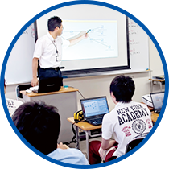

入学時はコンピュータの未経験者でも、半年後には国家資格を取得できるほど成長できるのがモリジョビ。ITの基礎からデータベースやネットワーク技術、プログラム言語やシステム設計まで幅広く学び、即戦力として活躍できる技術を習得できます。
国家資格である基本情報技術者試験の午前試験免除認定校です。経験豊富な講師陣の指導のもと、入学後半年で取得できるカリキュラムを実践。北東北No.1の合格率を誇る実力が評価され、県内外の大手企業から多数の内定をいただいています。
２年課程として専門学校でＩＴの知識を学び、資格を取得した上で、大学の３年次への編入学を目指すことができます。岩手県立大学ソフトウェア情報学部をはじめ、県内外の大学に進む学生も多数。もっと学びを深めたい人にチャンスを広げています。